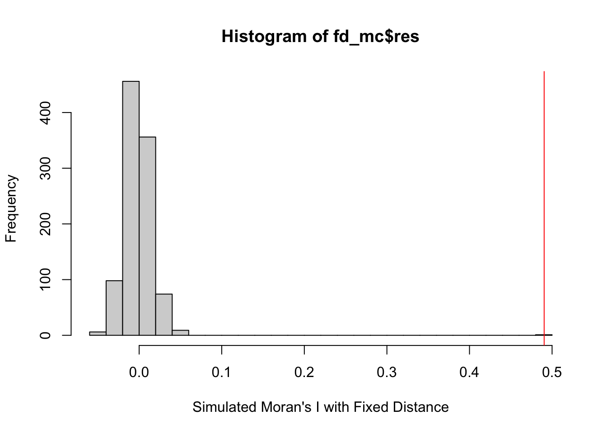
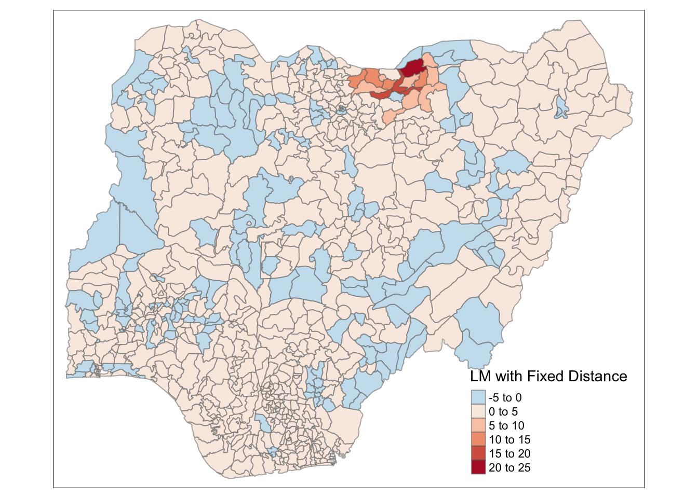
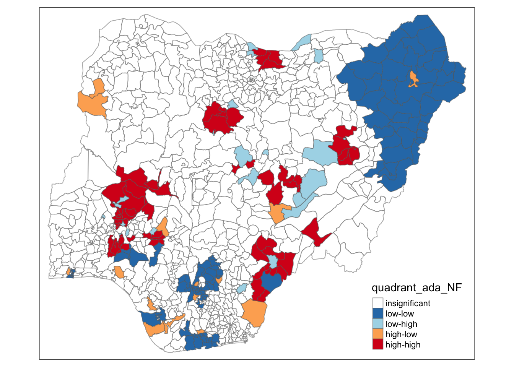
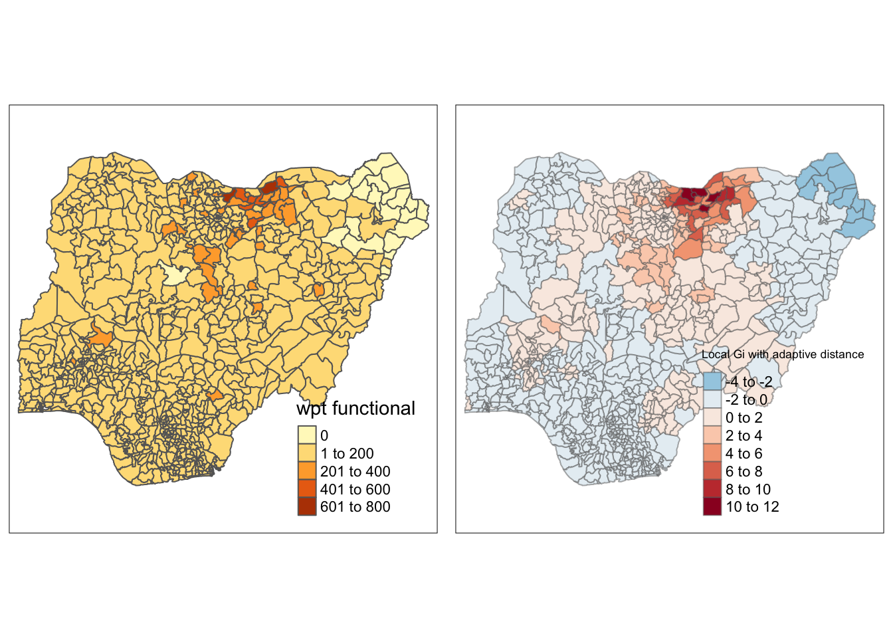

pacman::p_load(sf, tidyverse, tmap, spdep, funModeling)Take-home Ex1: Is there Positive Co-occurance Relationship Between Water Point Location on Nigeria?
Overview
In this lesson, a collection of geospatial statistical methods specially designed for measuring functional and non-functional water points will be used in global and local perspective.
These spatial statistics are well suited for:
detecting clusters or outliers;
identifying hot spot or cold spot areas;
assessing the assumptions of stationarity; and
identifying distances beyond which no discernible association obtains.
For this study, the data of Country of Nigeria will be used for further investigation.
Getting Started
In the code chunk below, p_load() of pacman package is used to install and load the following R packages into R environment:
sf,
tidyverse,
tmap,
spdep, and
funModeling will be used for rapid Exploratory Data Analysis
Importing Geospatial Data from Filtered Data
In the previous in-class Exercise 2 data, two geospatial data sets were being used, they are:
geo_export
nga_admbnda_adm2_osgof_20190417
Specific water point geospatial data was first imported and filtered in the In-class exercise 2 section.
Next, write_rds() of readr package was used to save the extracted sf data table (i.e. wp) into an output file in rds data format. The output file is called nga_wp.rds and it is saved in data sub-folder.
With filter() of dplyr is used to select functional and non-functional water point data, select() of dplyr is used to retain a small size file with only field 3,4,9,10, 18,19,20,21,22,and 23.
After these complete clearing part, the raw data was deleted away to prevent large file storage issue. The following part of data wrangling imports the filtered data into the environment.
Reading the Spatial Distribution of Water Points
First, we are going to import the water point geospatial data (i.e. nga_wp) by using the code chunk below.
nga_wp <- read_rds("data/nga_wp.rds")Data Wrangling
Working with Projection
Map projection is an important property of a geospatial data. In order to perform geoprocessing using two geospatial data, we need to ensure that both geospatial data are projected using similar coordinate system. The technical term of this process is called projection transformation.
Assigning EPSG code to a simple feature data frame
One of the common issue that can happen during importing geospatial data into R is that the coordinate system of the source data was either missing (such as due to missing .proj for ESRI shapefile) or wrongly assigned during the importing process.
The water point data of nga_wp will be run through st_crs() of sf package as shown in the code chunk below.
st_crs(nga_wp)Coordinate Reference System:
User input: EPSG:4326
wkt:
GEOGCRS["WGS 84",
DATUM["World Geodetic System 1984",
ELLIPSOID["WGS 84",6378137,298.257223563,
LENGTHUNIT["metre",1]]],
PRIMEM["Greenwich",0,
ANGLEUNIT["degree",0.0174532925199433]],
CS[ellipsoidal,2],
AXIS["geodetic latitude (Lat)",north,
ORDER[1],
ANGLEUNIT["degree",0.0174532925199433]],
AXIS["geodetic longitude (Lon)",east,
ORDER[2],
ANGLEUNIT["degree",0.0174532925199433]],
USAGE[
SCOPE["Horizontal component of 3D system."],
AREA["World."],
BBOX[-90,-180,90,180]],
ID["EPSG",4326]]This code indicates that the EPSG is 4326. This is a wrong EPSG code because the correct EPSG code for the task should be a choice between 26391, 26392, and 26303. Therefore, transformation of EPSG is needed, st_set_crs() of sf package is used as shown in the code chunk below.
NIGERIA <- st_transform(nga_wp, 26391)Now, let us check the CSR again by using the code chunk below.
st_crs(NIGERIA)Coordinate Reference System:
User input: EPSG:26391
wkt:
PROJCRS["Minna / Nigeria West Belt",
BASEGEOGCRS["Minna",
DATUM["Minna",
ELLIPSOID["Clarke 1880 (RGS)",6378249.145,293.465,
LENGTHUNIT["metre",1]]],
PRIMEM["Greenwich",0,
ANGLEUNIT["degree",0.0174532925199433]],
ID["EPSG",4263]],
CONVERSION["Nigeria West Belt",
METHOD["Transverse Mercator",
ID["EPSG",9807]],
PARAMETER["Latitude of natural origin",4,
ANGLEUNIT["degree",0.0174532925199433],
ID["EPSG",8801]],
PARAMETER["Longitude of natural origin",4.5,
ANGLEUNIT["degree",0.0174532925199433],
ID["EPSG",8802]],
PARAMETER["Scale factor at natural origin",0.99975,
SCALEUNIT["unity",1],
ID["EPSG",8805]],
PARAMETER["False easting",230738.26,
LENGTHUNIT["metre",1],
ID["EPSG",8806]],
PARAMETER["False northing",0,
LENGTHUNIT["metre",1],
ID["EPSG",8807]]],
CS[Cartesian,2],
AXIS["(E)",east,
ORDER[1],
LENGTHUNIT["metre",1]],
AXIS["(N)",north,
ORDER[2],
LENGTHUNIT["metre",1]],
USAGE[
SCOPE["Engineering survey, topographic mapping."],
AREA["Nigeria - onshore west of 6°30'E, onshore and offshore shelf."],
BBOX[3.57,2.69,13.9,6.5]],
ID["EPSG",26391]]Notice that the EPSG code is 26391 now.
The summary of the filtered data is shown below:
summary(NIGERIA) ADM2_EN ADM2_PCODE ADM1_PCODE ADM0_EN
Length:774 Length:774 Length:774 Length:774
Class :character Class :character Class :character Class :character
Mode :character Mode :character Mode :character Mode :character
total wpt wpt functional wpt non-functional wpt unknown
Min. : 0.0 Min. : 0.00 Min. : 0.00 Min. : 0.00
1st Qu.: 45.0 1st Qu.: 17.00 1st Qu.: 12.00 1st Qu.: 0.00
Median : 96.0 Median : 45.50 Median : 31.00 Median : 0.00
Mean :122.7 Mean : 67.36 Mean : 38.49 Mean : 13.76
3rd Qu.:168.8 3rd Qu.: 87.75 3rd Qu.: 56.00 3rd Qu.: 17.75
Max. :894.0 Max. :752.00 Max. :240.00 Max. :219.00
pct_functional pct_non-functional geometry
Min. :0.0000 Min. :0.0000 MULTIPOLYGON :774
1st Qu.:0.3333 1st Qu.:0.1935 epsg:26391 : 0
Median :0.4792 Median :0.3333 +proj=tmer...: 0
Mean :0.5070 Mean :0.3406
3rd Qu.:0.6749 3rd Qu.:0.4746
Max. :1.0000 Max. :1.0000
NA's :13 NA's :13 head(NIGERIA)Simple feature collection with 6 features and 10 fields
Geometry type: MULTIPOLYGON
Dimension: XY
Bounding box: xmin: 481557.7 ymin: 98997.75 xmax: 1245549 ymax: 1092644
Projected CRS: Minna / Nigeria West Belt
ADM2_EN ADM2_PCODE ADM1_PCODE ADM0_EN total wpt wpt functional
1 Aba North NG001001 NG001 Nigeria 17 7
2 Aba South NG001002 NG001 Nigeria 71 29
3 Abadam NG008001 NG008 Nigeria 0 0
4 Abaji NG015001 NG015 Nigeria 57 23
5 Abak NG003001 NG003 Nigeria 48 23
6 Abakaliki NG011001 NG011 Nigeria 233 82
wpt non-functional wpt unknown pct_functional pct_non-functional
1 9 1 0.4117647 0.5294118
2 35 7 0.4084507 0.4929577
3 0 0 NaN NaN
4 34 0 0.4035088 0.5964912
5 25 0 0.4791667 0.5208333
6 41 109 0.3519313 0.1759657
geometry
1 MULTIPOLYGON (((552560.3 12...
2 MULTIPOLYGON (((551048.7 12...
3 MULTIPOLYGON (((1245549 106...
4 MULTIPOLYGON (((510602.3 57...
5 MULTIPOLYGON (((598086 1218...
6 MULTIPOLYGON (((663801.7 25...Visualizing the Numerical Spatial Distribution of Water Points
Visualized distribution of the numerical functional and non-functional data is presented in the following code chunk:
total <- qtm(NIGERIA, "total wpt")
wp_functional <- qtm(NIGERIA, "wpt functional")
wp_nonfunctional <- qtm(NIGERIA, "wpt non-functional")
unknown <- qtm(NIGERIA, "wpt unknown")
tmap_arrange(total, unknown, wp_functional, wp_nonfunctional, asp=1, ncol=2)
Visualizing the Percentile Spatial Distribution of Water Points
Next, maps to show the spatial distribution of functional and non-functional water point rate at LGA level by using appropriate thematic mapping technique provided by tmap package is needed, the following code chunk will display the percentage functional and non-functional water point data in a plot.
pct_functional <- qtm(NIGERIA, "pct_functional")
pct_nonfunctional <- qtm(NIGERIA, "pct_non-functional")
tmap_arrange(pct_functional, pct_nonfunctional, ncol=2)
Usage of Local Indicator of Spatial Association (LISA)
What is LISA?
A subset of localized geospatial statistics methods.
Any spatial statistics that satisfies the following two requirements (Anselin, L. 1995):
the LISA for each observation gives an indication of the extent of significant spatial clustering of similar values around that observation;
the sum of LISAs for all observations is proportional to a global indicator of spatial association.
Detecting Spatial Clusters and Outliers
Given a set of geospatial features (i.e. points or polygons) and an analysis field, the spatial statistics identify spatial clusters of features with high or low values. The tool also identifies spatial outliers.
local Moran’s I is the most popular spatial statistical method used, other methods include local Geary’s c.
In general, the analysis will calculate a local statistic value, a z-score, a pseudo p-value, and a code representing the cluster type for each statistically significant feature. The z-scores and pseudo p-values represent the statistical significance of the computed index values.
Select an Appropriate Spatial Weighting Method
Polygon Contiguity
Fixed Distance
Inverse Distance
K-nearest Neighbors
With the 4 weighting methods mentioned above, only two of them are distance related: Fixed Distance Method and Inverse Distance Method.
The fixed distance method works well for point data. It is often a good option for polygon data when there is a large variation in polygon size, and you want to ensure a consistent scale of analysis.
The inverse distance method is most appropriate with continuous data or to model processes where the closer two features are in space, the more likely they are to interact/influence each other.
From the description mentioned above, the inverse distance method best fit for this analytical scenario.
Therefore we need to find the centroid of each area, the code chunk below will calculate the geometric center of a spatial object
coords <- st_centroid(st_geometry(NIGERIA))Determine the Cut-off Distance for the Matrix
Firstly, we need to determine the upper limit for distance band by using the steps below:
Return a matrix with the indices of points belonging to the set of the k nearest neighbours of each other by using knearneigh() of spdep.
Convert the knn object returned by knearneigh() into a neighbours list of class nb with a list of integer vectors containing neighbour region number ids by using knn2nb().
Return the length of neighbour relationship edges by using nbdists() of spdep. The function returns in the units of the coordinates if the coordinates are projected, in km otherwise.
Remove the list structure of the returned object by using unlist().
k1 <- knn2nb(knearneigh(coords))
k1dists <- unlist(nbdists(k1, coords))summary(k1dists) Min. 1st Qu. Median Mean 3rd Qu. Max.
2669 12834 20304 22084 27783 72139 The summary report shows that the maximum neighbor distance is 72139 meters, so a maximum threshold is created, in order to make sure all units have a nearest neighbor under the maximum threshold, this maximum variable is then saved for future calculation.
MAX <- max(unlist(nbdists(k1, coords)))Computing Fixed Distance Weight Matrix
For both fixed and inverse distance weighting matrix, both will be computed, plotted, and compared.
Now, we will compute the distance weight matrix by using dnearneigh() as shown in the code chunk below.
fix_dis <- dnearneigh(coords, 0 , MAX)
fix_disNeighbour list object:
Number of regions: 774
Number of nonzero links: 18130
Percentage nonzero weights: 3.026327
Average number of links: 23.42377 From the above summary, percentage of nonzero weights runs out to be 3.02, with an average number of links, which in other words, 23 neighbors per region is determined using fixed distance weight method.
Visualizing Fixed Distance Weighting Method
Now, we will plot the fixed distance weight matrix by using the code chunk below.
plot(NIGERIA$geometry, border="lightgrey")
plot(fix_dis, coords, add=TRUE)
plot(k1, coords, add=TRUE, col="red", length=0.01)The red lines show the links of 1st nearest neighbors and the black lines show the links of neighbors within the cut-off distance of 72km.
Alternatively, we can plot both of them next to each other by using the code chunk below.
par(mfrow=c(1,2))
plot(NIGERIA$geometry, border="lightgrey", main="1st Nearest Neighbours")
plot(k1, coords, add=TRUE, col="red", length=0.01)
plot(NIGERIA$geometry, border="lightgrey", main="Distance Link")
plot(fix_dis, coords, add=TRUE, pch = 10, cex = 0.05)Computing Adaptive Distance Weight Matrix
One of the characteristics of fixed distance weight matrix is that more densely settled areas (usually the urban areas) tend to have more neighbors and the less densely settled areas (usually the rural counties) tend to have lesser neighbors. Having many neighbors smoothes the neighbor relationship across more neighbors.
It is possible to control the numbers of neighbors directly using k-nearest neighbors, either accepting asymmetric neighbors or imposing symmetry as shown in the code chunk below.
ada_dis <- knn2nb(knearneigh(coords, k=6))
ada_disNeighbour list object:
Number of regions: 774
Number of nonzero links: 4644
Percentage nonzero weights: 0.7751938
Average number of links: 6
Non-symmetric neighbours listVisualizing Adaptive Distance Weighting Method
We can plot the adaptive distance weight matrix using the code chunk below.
plot(NIGERIA$geometry, border="lightgrey", main="Adaptive Distance Weighting Method")
plot(ada_dis, coords, pch = 10, cex = 0.2, add = TRUE, col = "red")Computing Inverse Distance Weight Matrix
In this section, Inverse Distance Weighting Method is used.
First, it will first use the Queen contiguity weight matrix as a base, when we compute the distances between areas by using nbdists() of spdep.
wm_q <- poly2nb(NIGERIA, queen = TRUE)
dist <- nbdists(wm_q, coords)
dist[1][[1]]
[1] 4004.008 11065.063 9313.577 10676.236inv_dis <- lapply(dist, function(x) 1/(x/1000))
inv_dis[1][[1]]
[1] 0.24974975 0.09037454 0.10737014 0.09366597Row-standardized weights matrix
First, we construct the row-standardized weight matrix from the fix distance calculation using the nb2listw() function.
rs_fix <- nb2listw(fix_dis, style="W", zero.policy = TRUE)
summary(rs_fix)Characteristics of weights list object:
Neighbour list object:
Number of regions: 774
Number of nonzero links: 18130
Percentage nonzero weights: 3.026327
Average number of links: 23.42377
Link number distribution:
1 2 3 4 5 6 7 8 9 10 11 12 13 14 15 16 17 18 19 20 21 22 23 24 25 26
5 9 11 22 32 35 33 34 29 35 27 18 21 23 16 12 12 11 16 17 16 10 14 10 5 13
27 28 29 30 31 32 33 34 35 36 37 38 39 40 41 42 43 44 45 46 47 48 49 50 51 52
12 5 15 13 12 7 10 8 12 5 12 17 14 9 10 4 5 3 7 6 11 8 5 5 4 2
53 54 55 56 57 58 59 60 61 62 63 64 65 67 68 70
3 3 6 3 5 6 2 5 5 8 6 6 4 3 1 1
5 least connected regions:
90 112 123 237 670 with 1 link
1 most connected region:
585 with 70 links
Weights style: W
Weights constants summary:
n nn S0 S1 S2
W 774 599076 774 130.3659 3126.725Later, we construct the row-standardized weight matrix from the adaptive distance calculation using the nb2listw() function.
rs_ada <- nb2listw(ada_dis, style="B", zero.policy = TRUE)
summary(rs_ada)Characteristics of weights list object:
Neighbour list object:
Number of regions: 774
Number of nonzero links: 4644
Percentage nonzero weights: 0.7751938
Average number of links: 6
Non-symmetric neighbours list
Link number distribution:
6
774
774 least connected regions:
1 2 3 4 5 6 7 8 9 10 11 12 13 14 15 16 17 18 19 20 21 22 23 24 25 26 27 28 29 30 31 32 33 34 35 36 37 38 39 40 41 42 43 44 45 46 47 48 49 50 51 52 53 54 55 56 57 58 59 60 61 62 63 64 65 66 67 68 69 70 71 72 73 74 75 76 77 78 79 80 81 82 83 84 85 86 87 88 89 90 91 92 93 94 95 96 97 98 99 100 101 102 103 104 105 106 107 108 109 110 111 112 113 114 115 116 117 118 119 120 121 122 123 124 125 126 127 128 129 130 131 132 133 134 135 136 137 138 139 140 141 142 143 144 145 146 147 148 149 150 151 152 153 154 155 156 157 158 159 160 161 162 163 164 165 166 167 168 169 170 171 172 173 174 175 176 177 178 179 180 181 182 183 184 185 186 187 188 189 190 191 192 193 194 195 196 197 198 199 200 201 202 203 204 205 206 207 208 209 210 211 212 213 214 215 216 217 218 219 220 221 222 223 224 225 226 227 228 229 230 231 232 233 234 235 236 237 238 239 240 241 242 243 244 245 246 247 248 249 250 251 252 253 254 255 256 257 258 259 260 261 262 263 264 265 266 267 268 269 270 271 272 273 274 275 276 277 278 279 280 281 282 283 284 285 286 287 288 289 290 291 292 293 294 295 296 297 298 299 300 301 302 303 304 305 306 307 308 309 310 311 312 313 314 315 316 317 318 319 320 321 322 323 324 325 326 327 328 329 330 331 332 333 334 335 336 337 338 339 340 341 342 343 344 345 346 347 348 349 350 351 352 353 354 355 356 357 358 359 360 361 362 363 364 365 366 367 368 369 370 371 372 373 374 375 376 377 378 379 380 381 382 383 384 385 386 387 388 389 390 391 392 393 394 395 396 397 398 399 400 401 402 403 404 405 406 407 408 409 410 411 412 413 414 415 416 417 418 419 420 421 422 423 424 425 426 427 428 429 430 431 432 433 434 435 436 437 438 439 440 441 442 443 444 445 446 447 448 449 450 451 452 453 454 455 456 457 458 459 460 461 462 463 464 465 466 467 468 469 470 471 472 473 474 475 476 477 478 479 480 481 482 483 484 485 486 487 488 489 490 491 492 493 494 495 496 497 498 499 500 501 502 503 504 505 506 507 508 509 510 511 512 513 514 515 516 517 518 519 520 521 522 523 524 525 526 527 528 529 530 531 532 533 534 535 536 537 538 539 540 541 542 543 544 545 546 547 548 549 550 551 552 553 554 555 556 557 558 559 560 561 562 563 564 565 566 567 568 569 570 571 572 573 574 575 576 577 578 579 580 581 582 583 584 585 586 587 588 589 590 591 592 593 594 595 596 597 598 599 600 601 602 603 604 605 606 607 608 609 610 611 612 613 614 615 616 617 618 619 620 621 622 623 624 625 626 627 628 629 630 631 632 633 634 635 636 637 638 639 640 641 642 643 644 645 646 647 648 649 650 651 652 653 654 655 656 657 658 659 660 661 662 663 664 665 666 667 668 669 670 671 672 673 674 675 676 677 678 679 680 681 682 683 684 685 686 687 688 689 690 691 692 693 694 695 696 697 698 699 700 701 702 703 704 705 706 707 708 709 710 711 712 713 714 715 716 717 718 719 720 721 722 723 724 725 726 727 728 729 730 731 732 733 734 735 736 737 738 739 740 741 742 743 744 745 746 747 748 749 750 751 752 753 754 755 756 757 758 759 760 761 762 763 764 765 766 767 768 769 770 771 772 773 774 with 6 links
774 most connected regions:
1 2 3 4 5 6 7 8 9 10 11 12 13 14 15 16 17 18 19 20 21 22 23 24 25 26 27 28 29 30 31 32 33 34 35 36 37 38 39 40 41 42 43 44 45 46 47 48 49 50 51 52 53 54 55 56 57 58 59 60 61 62 63 64 65 66 67 68 69 70 71 72 73 74 75 76 77 78 79 80 81 82 83 84 85 86 87 88 89 90 91 92 93 94 95 96 97 98 99 100 101 102 103 104 105 106 107 108 109 110 111 112 113 114 115 116 117 118 119 120 121 122 123 124 125 126 127 128 129 130 131 132 133 134 135 136 137 138 139 140 141 142 143 144 145 146 147 148 149 150 151 152 153 154 155 156 157 158 159 160 161 162 163 164 165 166 167 168 169 170 171 172 173 174 175 176 177 178 179 180 181 182 183 184 185 186 187 188 189 190 191 192 193 194 195 196 197 198 199 200 201 202 203 204 205 206 207 208 209 210 211 212 213 214 215 216 217 218 219 220 221 222 223 224 225 226 227 228 229 230 231 232 233 234 235 236 237 238 239 240 241 242 243 244 245 246 247 248 249 250 251 252 253 254 255 256 257 258 259 260 261 262 263 264 265 266 267 268 269 270 271 272 273 274 275 276 277 278 279 280 281 282 283 284 285 286 287 288 289 290 291 292 293 294 295 296 297 298 299 300 301 302 303 304 305 306 307 308 309 310 311 312 313 314 315 316 317 318 319 320 321 322 323 324 325 326 327 328 329 330 331 332 333 334 335 336 337 338 339 340 341 342 343 344 345 346 347 348 349 350 351 352 353 354 355 356 357 358 359 360 361 362 363 364 365 366 367 368 369 370 371 372 373 374 375 376 377 378 379 380 381 382 383 384 385 386 387 388 389 390 391 392 393 394 395 396 397 398 399 400 401 402 403 404 405 406 407 408 409 410 411 412 413 414 415 416 417 418 419 420 421 422 423 424 425 426 427 428 429 430 431 432 433 434 435 436 437 438 439 440 441 442 443 444 445 446 447 448 449 450 451 452 453 454 455 456 457 458 459 460 461 462 463 464 465 466 467 468 469 470 471 472 473 474 475 476 477 478 479 480 481 482 483 484 485 486 487 488 489 490 491 492 493 494 495 496 497 498 499 500 501 502 503 504 505 506 507 508 509 510 511 512 513 514 515 516 517 518 519 520 521 522 523 524 525 526 527 528 529 530 531 532 533 534 535 536 537 538 539 540 541 542 543 544 545 546 547 548 549 550 551 552 553 554 555 556 557 558 559 560 561 562 563 564 565 566 567 568 569 570 571 572 573 574 575 576 577 578 579 580 581 582 583 584 585 586 587 588 589 590 591 592 593 594 595 596 597 598 599 600 601 602 603 604 605 606 607 608 609 610 611 612 613 614 615 616 617 618 619 620 621 622 623 624 625 626 627 628 629 630 631 632 633 634 635 636 637 638 639 640 641 642 643 644 645 646 647 648 649 650 651 652 653 654 655 656 657 658 659 660 661 662 663 664 665 666 667 668 669 670 671 672 673 674 675 676 677 678 679 680 681 682 683 684 685 686 687 688 689 690 691 692 693 694 695 696 697 698 699 700 701 702 703 704 705 706 707 708 709 710 711 712 713 714 715 716 717 718 719 720 721 722 723 724 725 726 727 728 729 730 731 732 733 734 735 736 737 738 739 740 741 742 743 744 745 746 747 748 749 750 751 752 753 754 755 756 757 758 759 760 761 762 763 764 765 766 767 768 769 770 771 772 773 774 with 6 links
Weights style: B
Weights constants summary:
n nn S0 S1 S2
B 774 599076 4644 8342 113854Global Spatial Autocorrelation: Moran’s I
In this section, Moran’s I statistics testing is performed by using moran.test() of spdep. The code chunk below performs Moran’s I statistical testing using moran.test() of spdep. First is fix distance weighting method.
moran.test(NIGERIA$pct_functional,
listw=rs_fix,
zero.policy = TRUE,
na.action=na.omit)
Moran I test under randomisation
data: NIGERIA$pct_functional
weights: rs_fix
omitted: 3, 86, 241, 250, 252, 261, 400, 406, 447, 473, 492, 507, 526
Moran I statistic standard deviate = 33.359, p-value < 2.2e-16
alternative hypothesis: greater
sample estimates:
Moran I statistic Expectation Variance
0.4903959137 -0.0013157895 0.0002172632 Then, adaptive distance weighting method is applied.
moran.test(NIGERIA$pct_functional,
listw=rs_ada,
zero.policy = TRUE,
na.action=na.omit)
Moran I test under randomisation
data: NIGERIA$pct_functional
weights: rs_ada
omitted: 3, 86, 241, 250, 252, 261, 400, 406, 447, 473, 492, 507, 526
Moran I statistic standard deviate = 26.842, p-value < 2.2e-16
alternative hypothesis: greater
sample estimates:
Moran I statistic Expectation Variance
0.5309075696 -0.0013157895 0.0003931616 Computing Monte Carlo Moran’s I
The code chunk below performs permutation test for Moran’s I statistic by using moran.mc() of spdep. A total of 1000 simulation will be performed. First is fix distance weighting method.
set.seed(1234)
fd_mc= moran.mc(NIGERIA$pct_functional,
listw=rs_fix,
nsim=999,
zero.policy = TRUE,
na.action=na.omit)
fd_mc
Monte-Carlo simulation of Moran I
data: NIGERIA$pct_functional
weights: rs_fix
omitted: 3, 86, 241, 250, 252, 261, 400, 406, 447, 473, 492, 507, 526
number of simulations + 1: 1000
statistic = 0.4904, observed rank = 1000, p-value = 0.001
alternative hypothesis: greaterThen, adaptive distance weighting method is used.
set.seed(1234)
ad_mc= moran.mc(NIGERIA$pct_functional,
listw=rs_ada,
nsim=999,
zero.policy = TRUE,
na.action=na.omit)
ad_mc
Monte-Carlo simulation of Moran I
data: NIGERIA$pct_functional
weights: rs_ada
omitted: 3, 86, 241, 250, 252, 261, 400, 406, 447, 473, 492, 507, 526
number of simulations + 1: 1000
statistic = 0.53091, observed rank = 1000, p-value = 0.001
alternative hypothesis: greaterWith both p-value less than 1%, indicating a statistically significance to the alternative hypothesis that the attribute is certainly not randomly distributed and a positive Moran I value indicate more spatially clustered than would be expected if underlying spatial processes were random.
Visualizing Monte Carlo Moran’s I
In the code chunk below hist() and abline() of R Graphics are used.
At first, Moran’s I with fixed distance method is graphed.
mean(fd_mc$res[1:999])[1] -0.001684223var(fd_mc$res[1:999])[1] 0.0002378411summary(fd_mc$res[1:999]) Min. 1st Qu. Median Mean 3rd Qu. Max.
-0.055732 -0.011952 -0.002234 -0.001684 0.008332 0.054780 hist(fd_mc$res,
freq=TRUE,
breaks=20,
xlab="Simulated Moran's I with Fixed Distance")
abline(v=0.4904,
col="red") 
Next, Moran’s I with adaptive distance method is generated.
mean(ad_mc$res[1:999])[1] -0.002258227var(ad_mc$res[1:999])[1] 0.0004244106summary(ad_mc$res[1:999]) Min. 1st Qu. Median Mean 3rd Qu. Max.
-0.064740 -0.016225 -0.002175 -0.002258 0.010977 0.083451 hist(ad_mc$res,
freq=TRUE,
breaks=20,
xlab="Simulated Moran's I with Adaptive Distance")
abline(v=0.53091,
col="red") Based on the above plot and result of the Monte Carlo Moran’s I test, we can conclude that the results are statistically significant with P-value less than 0.01. With the result of Moran’s I test falls to the extreme right on the histogram indicating a cluster for both matrix method.
Compute Moran’s I correlogram
In the code chunk below, sp.correlogram() of spdep package is used to compute a 6-lag spatial correlogram of GDPPC. The global spatial autocorrelation used in Moran’s I. The plot() of base Graph is then used to plot the output.
MI_corr <- sp.correlogram(wm_q,
NIGERIA$`wpt functional`,
order=6,
method="I",
style="W",
zero.policy = TRUE)
plot(MI_corr)The correlogram is a commonly used tool for checking randomness in a data set. If random, autocorrelations should be near zero for any and all time-lag separations. If non-random, then one or more of the autocorrelations will be significantly non-zero.
The above correlogram graph indicates a big difference across all 6-lag, indicating a non-random correlation across the results.
Cluster and Outlier Analysis
Local Indicators of Spatial Association or LISA are statistics that evaluate the existence of clusters in the spatial arrangement of a given variable. In this section, appropriate Local Indicators for Spatial Association (LISA) is used for cluster ad outlier analysis.
Computing Local Moran’s I
To compute local Moran’s I, the localmoran() function of spdep will be used. It computes Ii values, given a set of zi values and a listw object providing neighbor weighting information for the polygon associated with the zi values.
For the following code chunk, fix distance method and adaptive distance method will be used to calculate functional water point data, and adaptive distance method will be further used to calculate non-functional water point data on the local Moran’s I.
Fixed Distance with wpt functional
fips <- order(NIGERIA$ADM2_EN)
localMI_fix <- localmoran(NIGERIA$`wpt functional`, rs_fix)
head(localMI_fix) Ii E.Ii Var.Ii Z.Ii Pr(z != E(Ii))
1 0.43151603 -7.191834e-04 0.008120236 4.7966255 1.613609e-06
2 0.27475350 -2.904635e-04 0.003338620 4.7601280 1.934703e-06
3 0.69235062 -8.956670e-04 0.345864093 1.1787856 2.384836e-01
4 0.05590525 -3.884365e-04 0.029702941 0.3266329 7.439455e-01
5 0.33277612 -3.884365e-04 0.004984321 4.7190630 2.369335e-06
6 0.05909213 -4.231402e-05 0.001519106 1.5172126 1.292130e-01Adaptive Distance with wpt functional
localMI_ada <- localmoran(NIGERIA$`wpt functional`, rs_ada)
head(localMI_ada) Ii E.Ii Var.Ii Z.Ii Pr(z != E(Ii))
1 2.62637613 -0.0043151005 3.3158699 1.44467825 0.1485483
2 1.79202160 -0.0017427810 1.3397868 1.54969972 0.1212136
3 4.15410372 -0.0053740022 4.1288367 2.04703349 0.0406548
4 0.08904472 -0.0023306187 1.7915195 0.06826816 0.9455722
5 1.81510601 -0.0023306187 1.7915195 1.35783973 0.1745145
6 0.36157415 -0.0002538841 0.1952253 0.81890612 0.4128400Adaptive Distance with wpt non-functional
localMI_ada_nonfun <- localmoran(NIGERIA$`wpt non-functional`, rs_ada)
head(localMI_ada_nonfun) Ii E.Ii Var.Ii Z.Ii Pr(z != E(Ii))
1 -0.62866911 -5.743824e-03 4.41269756 -0.2965404 0.766817413
2 -0.05659632 -8.048448e-05 0.06189069 -0.2271734 0.820288916
3 7.56345585 -9.784548e-03 7.51192077 2.7631613 0.005724446
4 -0.14923094 -1.331990e-04 0.10242604 -0.4658712 0.641307679
5 0.29782446 -1.202012e-03 0.92414656 0.3110564 0.755757710
6 0.18797941 -4.157573e-05 0.03197098 1.0515462 0.293007800Mapping the local Moran’s I
Before mapping the local Moran’s I map, it is wise to append the local Moran’s I dataframe (i.e. localMI) onto the original NIGERIA SpatialPolygonDataFrame. The code chunks below can be used to perform the task. The out SpatialPolygonDataFrame is called hunan.localMI.
nigeria_localMI_fix <- cbind(NIGERIA,localMI_fix) %>%
rename(Pr.Ii = Pr.z....E.Ii..)
nigeria_localMI_ada <- cbind(NIGERIA,localMI_ada) %>%
rename(Pr.Ii = Pr.z....E.Ii..)
nigeria_localMI_ada_nonfun <- cbind(nigeria_localMI_ada,
localMI_ada_nonfun) %>%
rename(Pr.Ii.fun = Pr.z....E.Ii..)Mapping Local Moran’s I values
Using choropleth mapping functions of tmap package, we can plot the local Moran’s I values by using the code chinks below.
Firstly, it is the local Moran Statistics on Fixed Distance with wpt functional
fix_LM_map <- tm_shape(nigeria_localMI_fix) +
tm_fill(col = "Ii",
style = "pretty",
palette = "-RdBu",
title = "LM with Fixed Distance") +
tm_borders(alpha = 0.5)
fix_LM_map
Then, it is the local Moran Statistics on Adaptive Distance with wpt functional
ada_LM_map <- tm_shape(nigeria_localMI_ada) +
tm_fill(col = "Ii",
style = "pretty",
palette = "-RdBu",
title = "LM with Adaptive Distance") +
tm_borders(alpha = 0.5)
ada_LM_map
Lastly, we have the local Moran Statistics on Adaptive Distance with wpt non-functional
tm_shape(nigeria_localMI_ada_nonfun) +
tm_fill(col = "Ii",
style = "pretty",
palette = "RdBu",
title = "Local Moran Statistics") +
tm_borders(alpha = 0.5)Creating a LISA Cluster Map
The LISA Cluster Map shows the significant locations color coded by type of spatial autocorrelation. The first step before we can generate the LISA cluster map is to plot the Moran scatterplot.
Plotting Moran scatterplot
The Moran scatterplot is an illustration of the relationship between the values of the chosen attribute at each location and the average value of the same attribute at neighboring locations.
The code chunk below plots the Moran scatterplot of Functional Water Point by using moran.plot() of spdep.
nci <- moran.plot(NIGERIA$`wpt functional`, rs_fix,
labels=as.character(NIGERIA$ADM2_EN),
xlab="Functional Water Point",
ylab="Spatially Lag Functional Water Point")Preparing LISA map classes
For this section, LISA map categorization and visualization is performed.
We first derives the spatially lagged variable of interest and centers the spatially lagged variable around its mean, then follow by centering the local Moran’s around the mean, with a statistical significance level for the local Moran is set, and lastly define the low-low (1), low-high (2), high-low (3) and high-high (4) categories with non-significant Moran placed in the category 0.
We start with fixed distance method and functional water point data.
The code chunks below show the steps to prepare a LISA cluster map.
quadrant_fix <- vector(mode="numeric",length=nrow(localMI_fix))
NIGERIA$lag_wpt_fun <- lag.listw(rs_fix,NIGERIA$`wpt functional`)
DV <- NIGERIA$lag_wpt_fun - mean(NIGERIA$lag_wpt_fun)
LM1 <- localMI_fix[,1] - mean(localMI_fix[,1])
signif <- 0.05
quadrant_fix[DV < 0 & LM1 > 0] <- 1
quadrant_fix[DV > 0 & LM1 < 0] <- 2
quadrant_fix[DV < 0 & LM1 < 0] <- 3
quadrant_fix[DV > 0 & LM1 > 0] <- 4
quadrant_fix[localMI_fix[,5] > signif] <- 0nigeria_localMI_fix$quadrant_fix <- quadrant_fix
colors <- c("#ffffff", "#2c7bb6", "#abd9e9", "#fdae61", "#d7191c")
clusters <- c("insignificant", "low-low", "low-high", "high-low", "high-high")
tm_shape(nigeria_localMI_fix) +
tm_fill(col = "quadrant_fix",
style = "cat",
palette = colors[c(sort(unique(quadrant_fix)))+1],
labels = clusters[c(sort(unique(quadrant_fix)))+1],
popup.vars = c("")) +
tm_view(set.zoom.limits = c(11,17)) +
tm_borders(alpha=0.5)Secondly, adaptive distance method and functional water point data is plotted.
quadrant_ada <- vector(mode="numeric",length=nrow(localMI_ada))
NIGERIA$lag_wpt_fun <- lag.listw(rs_ada,NIGERIA$`wpt functional`)
DV <- NIGERIA$lag_wpt_fun - mean(NIGERIA$lag_wpt_fun)
LM1 <- localMI_ada[,1] - mean(localMI_ada[,1])
signif <- 0.05
quadrant_ada[DV < 0 & LM1 > 0] <- 1
quadrant_ada[DV > 0 & LM1 < 0] <- 2
quadrant_ada[DV < 0 & LM1 < 0] <- 3
quadrant_ada[DV > 0 & LM1 > 0] <- 4
quadrant_ada[localMI_ada[,5] > signif] <- 0nigeria_localMI_ada$quadrant_ada <- quadrant_ada
colors <- c("#ffffff", "#2c7bb6", "#abd9e9", "#fdae61", "#d7191c")
clusters <- c("insignificant", "low-low", "low-high", "high-low", "high-high")
tm_shape(nigeria_localMI_ada) +
tm_fill(col = "quadrant_ada",
style = "cat",
palette = colors[c(sort(unique(quadrant_ada)))+1],
labels = clusters[c(sort(unique(quadrant_ada)))+1],
popup.vars = c("")) +
tm_view(set.zoom.limits = c(11,17)) +
tm_borders(alpha=0.5)Lastly, we have adaptive distance method and non-functional water point data.
quadrant_ada_NF <- vector(mode="numeric",length=nrow(localMI_ada_nonfun))
NIGERIA$lag_wpt_fun <- lag.listw(rs_ada,NIGERIA$`wpt functional`)
DV <- NIGERIA$lag_wpt_fun - mean(NIGERIA$lag_wpt_fun)
LM1 <- localMI_ada_nonfun[,1] - mean(localMI_ada_nonfun[,1])
signif <- 0.05
quadrant_ada_NF[DV < 0 & LM1 > 0] <- 1
quadrant_ada_NF[DV > 0 & LM1 < 0] <- 2
quadrant_ada_NF[DV < 0 & LM1 < 0] <- 3
quadrant_ada_NF[DV > 0 & LM1 > 0] <- 4
quadrant_ada_NF[localMI_ada_nonfun[,5] > signif] <- 0nigeria_localMI_ada_nonfun$quadrant_ada_NF <- quadrant_ada_NF
colors <- c("#ffffff", "#2c7bb6", "#abd9e9", "#fdae61", "#d7191c")
clusters <- c("insignificant", "low-low", "low-high", "high-low", "high-high")
tm_shape(nigeria_localMI_ada_nonfun) +
tm_fill(col = "quadrant_ada_NF",
style = "cat",
palette = colors[c(sort(unique(quadrant_ada_NF)))+1],
labels = clusters[c(sort(unique(quadrant_ada_NF)))+1],
popup.vars = c("")) +
tm_view(set.zoom.limits = c(11,17)) +
tm_borders(alpha=0.5)
An outlier: significant and negative if location i is associated with relatively low values in surrounding locations. A cluster: significant and positive if location i is associated with relatively high values of the surrounding locations.
From the above cluster analysis, we can observe extreme high-high cluster in the northern region, and extreme low-low cluster in the northeast area, with other small outliers scattering across the nation, showing a very uneven distribution of water resource in the poor country.
Hot Spot and Cold Spot Area Analysis
Beside detecting cluster and outliers, localized spatial statistics can be also used to detect hot spot and/or cold spot areas.
The term ‘hot spot’ has been used generically across disciplines to describe a region or value that is higher relative to its surroundings (Lepers et al 2005, Aben et al 2012, Isobe et al 2015).
Getis and Ord’s G-Statistics
An alternative spatial statistics to detect spatial anomalies is the Getis and Ord’s G-statistics (Getis and Ord, 1972; Ord and Getis, 1995). It looks at neighbours within a defined proximity to identify where either high or low values clutser spatially. Here, statistically significant hot-spots are recognised as areas of high values where other areas within a neighbourhood range also share high values too.
The analysis consists of three steps:
Deriving spatial weight matrix
Computing Gi statistics
Mapping Gi statistics
Computing Gi statistics
Gi statistics using fixed distance
Fixed Distance with wpt functional
fips2 <- order(NIGERIA$ADM2_EN)
gi.fixed <- localG(NIGERIA$`wpt functional`, rs_fix)
head(gi.fixed)[1] -4.7966255 -4.7601280 -1.1787856 -0.3266329 -4.7190630 1.5172126Adaptive Distance with wpt functional
gi.ada <- localG(NIGERIA$`wpt functional`, rs_ada)
head(gi.ada)[1] -1.44467825 -1.54969972 -2.04703349 -0.06826816 -1.35783973 0.81890612Next, we will join the Gi values to their corresponding hunan sf data frame by using the code chunk below.
nigeria_gi_fix <- cbind(NIGERIA,as.matrix(gi.fixed)) %>%
rename(gstat_fixed = as.matrix.gi.fixed.)
nigeria_gi_ada <- cbind(NIGERIA,as.matrix(gi.ada)) %>%
rename(gstat_ada = as.matrix.gi.ada.)Mapping Gi values
The code chunk below shows the functions used to map the Gi values derived using fixed and adaptive distance weight matrix.
fun <- qtm(NIGERIA,"wpt functional")
fix_gi_map <- tm_shape(nigeria_gi_fix) +
tm_fill(col = "gstat_fixed",
style = "pretty",
palette="-RdBu",
title = "Local Gi with fixed distance") +
tm_borders(alpha = 0.5)
tmap_arrange(fun, fix_gi_map, asp=1, ncol=2)For the fixed distanced matrix, it has a rather small spectrum compared to the adaptive distanced matrix, which means it will produce a less clear identification on hot and cold areas. For example, areas such as the northeast corner, the minor spots in the middle ares, which was identified in the wpt functional graph is hard to distinguish in the fixed Gi map, which cause difficulty in determine hot and cold spot areas.
ada_gi_map <- tm_shape(nigeria_gi_ada) +
tm_fill(col = "gstat_ada",
style = "pretty",
palette="-RdBu",
title = "Local Gi with adaptive distance") +
tm_borders(alpha = 0.5)
tmap_arrange(fun, ada_gi_map, asp=1, ncol=2)
For the adaptive distance matrix, it spots a clearer distinction on specific cold and hot areas, expecially on the northeast corner, where the fixed distance matrix fail to detect this cold area. Thus, from simply visualization, adaptive matrix produce a better result regarding hot and cold spot areas.
Analysis of LM and Gi map result
tmap_arrange(fix_LM_map, fix_gi_map, asp=1, ncol=2) tmap_arrange(ada_LM_map, ada_gi_map, asp=1, ncol=2) The above code chunks combine both Local Moran and Local Gi’s map.
The above results show that for both Local Moran and Local Gi’s map, the major hot and cold spots seem to match each other, but the small and surrounding areas appear to be dramatically different. With a totally different scaling spectrum, it might be the major reason why the two have generated such different result.
Most importantly, all the maps have shown a conspicuous hot area in the north, indicating a flourishing functional water point cluster in the region.
Conclusion
The importance of spatial autocorrelation is that it helps to define how important spatial characteristic is in affecting a given object in space and if there is a clear relationship of objects with spatial properties. In this exercise scenario, is the distribution of water area resource across the poor nation of Nigeria. The usage of LISA, the Moran’s I and Gi map allows us to put a closer investigation on geopspatial relationship across regions of the country, it not only clusters similar objects with other similar objects but also speaks about the degree of correlation or similarity. It is helpful in finding hidden patterns and relations. It finds a lot of applications in ecology and demographics.